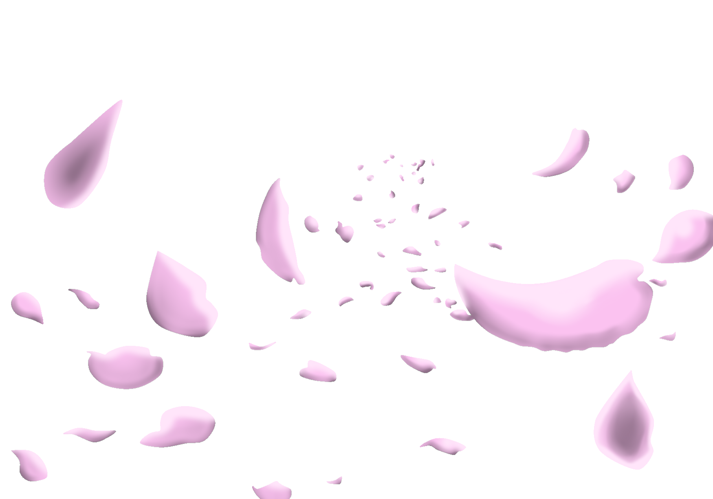
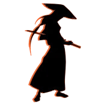

The Great
Samurai

The Great
Samurai
n December 1547, Francis was in Malacca (Malaysia) waiting to return to Goa (India) when he met a low-ranked samurai named Anjiro (possibly spelled "Yajiro"). Anjiro was not an intellectual, but he impressed Xavier because he took careful notes of everything he said in church. Xavier made the decision to go to Japan in part because this low-ranking samurai convinced him in Portuguese that the Japanese people were highly educated and eager to learn. They were hard workers and respectful of authority. In their laws and customs they were led by reason, and, should the Christian faith convince them of its truth, they would accept it en masse.
y the 12th century, upper-class samurai were highly literate because of the general introduction of Confucianism from China during the 7th to 9th centuries and in response to their perceived need to deal with the imperial court, who had a monopoly on culture and literacy for most of the Heian period. As a result, they aspired to the more cultured abilities of the nobility.[53] Examples such as Taira Tadanori (a samurai who appears in the Heike Monogatari) demonstrate that warriors idealized the arts and aspired to become skilled in them. Tadanori was famous for his skill with the pen and the sword or the "bun and the bu", the harmony of fighting and learning.
amurai were expected to be cultured and literate and admired the ancient saying "bunbu-ryōdō" (文武両道, literary arts, military arts, both ways) or "The pen and the sword in accord". By the time of the Edo period, Japan had a higher literacy comparable to that in central Europe.[54] The number of men who actually achieved the ideal and lived their lives by it was high. An early term for warrior, "uruwashii", was written with a kanji that combined the characters for literary study ("bun" 文) and military arts ("bu" 武), and is mentioned in the Heike Monogatari (late 12th century). The Heike Monogatari makes reference to the educated poet-swordsman ideal in its mention of Taira no Tadanori's death.
